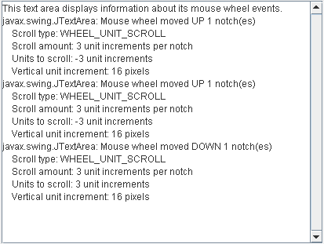

Lección: Escribiendo Listener Events
Sección: Implementando Listeners para los Eventos Comunmente Manejados
Cómo Escribir un Mouse-Wheel Listener
Los eventos de rueda del ratón se notifican cuando la rueda del ratón rota. Para información sobre la monitorización de otros eventos del ratón, tales como pulsaciones, vea Cómo Escribir un Mouse Listener. Para información sobre la monitorización de eventos sobre arrastre con ratón, vea Cómo Escribir un Mouse-Motion Listener. No todos los ratones tienen rueda y, en ese caso, los eventos de rueda de ratón no son generados. No hay forma de detectar por programación si el ratón está equipado con una rueda de ratón.
Alternativamente, use la clase AWT correspondiente
MouseAdapter , la cual implementa el interfaz MouseWheelListener, para crear
un MouseWheelEvent y sobreescribir los métodos para los eventos específicos.
Usualmente no es necesario implementar un mouse-wheel listener porque la rueda de ratón es utilizada principalmente para desplazarse. Los paneles de desplazamiento registran automáticamente los mouse-wheel listeners que reaccionan apropiadamente a la rueda de ratón.
Sin embargo, para crear un componente personalizado para ser usado dentro de un panel desplazamiento puede necesitar personalizar su comportamiento de desplazamiento ─ específicamente podría necesitar establecer la unidad e incrementos de bloque. Para una área de texto, por ejemplo, desplazarse una unidad significa desplazarse en una línea de texto. Un incremento de bloque típico desplaza una "página", o el tamaño de la ventana. Para más información, vea Implementación de un Cliente con Conocimientos de Desplazamiento en la página Cómo Usar los Paneles de Desplazamiento.
Para generar eventos de rueda del ratón, el cursor debe estar sobre el componente registrado para
monitorizar los eventos de rueda del ratón. El tipo de desplazamiento que ocurre, o
WHEEL_UNIT_SCROLL o WHEEL_BLOCK_SCROLL, es dependiente de la plataforma. La
cantidad que desplaza la rueda del ratón es también dependiente de la plataforma. Tanto el tipo como la
cantidad de desplazamiento puede establecerse mediante el panel de control del ratón para la plataforma.
El ejemplo siguiente demuestra eventos de rueda de ratón.

Intente esto:
-
Pulse el botón Lanzar para ejecutar MouseWheelEventDemo usando
Java™ Web Start (
descargue KDJ 7 o
posterior). Alternativamente, para compilar y ejecutar el ejemplo por sí mismo, consulte el
índice de ejemplos.

- Mueva el cursor sobre el área de texto.
- Gire la rueda del ratón lejos de usted. Verá uno o más eventos de rueda del ratón en la dirección arriba.
- Gire la rueda del ratón en la dirección contraria. Verá eventos de rueda del ratón en la dirección abajo.
- Intente cambiar el comportamiento del desplazamiento de la rueda del ratón en el panel de control del ratón de su sistema para ver cómo la salida cambia. No necesita reiniciar la demostración para ver que los cambios surtan efecto.
La salida desde MouseWheelEventDemo para un sistema que usa incrementos de unidad para su rueda de ratón podría tener el siguiente aspecto:
javax.swing.JTextArea: Mouse wheel moved UP 1 notch(es)
Scroll type: WHEEL_UNIT_SCROLL
Scroll amount: 3 unit increments per notch
Units to scroll: -3 unit increments
Vertical unit increment: 16 pixels
La cantidad de desplazamiento, devuelta por el método getScrollAmount, indica cuántas unidades
serán desplazadas y siempre presenta un número positivo. Las unidades a desplazar, devueltas por el método
getUnitsToScroll, son positivas cuando se desplaza hacia abajo y negativas cuando se desplaza hacia
arriba. El número de pixels para la unidad vertical se obtiene de la barra de desplazamiento verticla usando el
método getUnitIncrement. En el ejemplo precedente, rotar la rueda del ratón una muesca hacia
arriba significa que el desplazamiento hacia arriba en el área de texto es de 48 pixels (3x16).
Para un sistema que usa incrementos de bloque para el desplazamiento de la rueda del ratón, para el mismo movimiento de la rueda del ratón la salida podría tener el aspecto siguiente:
javax.swing.JTextArea: Mouse wheel moved UP 1 notch(es)
Scroll type: WHEEL_BLOCK_SCROLL
Vertical block increment: 307 pixels
El incremento de bloque vertical se obtiene desde la barra de desplazamiento vertical usando el método
getBlockIncrement. En este caso, rotar la rueda del ratón una muesca hacia arriba significa que el
área de texto se desplazaría hacia arriba 307 pixels.
Encuentre el código de la demostración en el fichero
MouseWheelEventDemo.java. El trozo de código siguiente se relaciona con el manejo del
evento de la rueda del ratón:
public class MouseWheelEventDemo ... implements MouseWheelListener ... {
public MouseWheelEventDemo() {
//where initialization occurs:
//Register for mouse-wheel events on the text area.
textArea.addMouseWheelListener(this);
...
}
public void mouseWheelMoved(MouseWheelEvent e) {
String message;
int notches = e.getWheelRotation();
if (notches < 0) {
message = "Mouse wheel moved UP "
+ -notches + " notch(es)" + newline;
} else {
message = "Mouse wheel moved DOWN "
+ notches + " notch(es)" + newline;
}
if (e.getScrollType() == MouseWheelEvent.WHEEL_UNIT_SCROLL) {
message += " Scroll type: WHEEL_UNIT_SCROLL" + newline;
message += " Scroll amount: " + e.getScrollAmount()
+ " unit increments per notch" + newline;
message += " Units to scroll: " + e.getUnitsToScroll()
+ " unit increments" + newline;
message += " Vertical unit increment: "
+ scrollPane.getVerticalScrollBar().getUnitIncrement(1)
+ " pixels" + newline;
} else { //scroll type == MouseWheelEvent.WHEEL_BLOCK_SCROLL
message += " Scroll type: WHEEL_BLOCK_SCROLL" + newline;
message += " Vertical block increment: "
+ scrollPane.getVerticalScrollBar().getBlockIncrement(1)
+ " pixels" + newline;
}
saySomething(message, e);
}
...
}
La IPA de Mouse Wheel Listener
La Interfaz MouseWheelListener
Aunque MouseWheelListener tiene sólo un método, tiene su clase adaptadora correspondiente
— MouseAdapter. Esta capacidad habilita a una aplicación a tener sólo una instancia de
la clase adaptadora para el componente que gestione todos los tipos de eventos del puntero del ratón.
| Método | Propósito |
|---|---|
| mouseWheelMoved(MouseWheelEvent) | Llamada cuando se rota la rueda del ratón. |
| Método | Propósito |
|---|---|
| int getScrollType() |
Devuelve el tipo de desplazamiento que se usa. Los valores posibles son WHEEL_BLOCK_SCROLL
y WHEEL_UNIT_SCROLL, y están determinados por la plataforma nativa.
|
| int getWheelRotation() | Devuelve el número de muescas que la rueda del ratón ha rotado. Si la rueda del ratón rotó hacia el usuario (abajo) el valor es positivo. Si la rueda dle ratón rotó lejos del usuario (arriba) el valor es negativo. |
| int getScrollAmount() |
Devuelve el número de unidades que deberían desplazarse por muesca. Este es siempre un número positivo
y es válido sólo si el tipo de desplazamiento es MouseWheelEvent.WHEEL_UNIT_SCROLL.
|
| int getUnitsToScroll() |
Devuelve las unidades positivas o negativas a desplazar para el evento actual. Esto sólo es válido
cuando el tipo de desplazamiento es MouseWheelEvent.WHEEL_UNIT_SCROLL.
|
Ejemplos que Usan Mouse Wheel Listeners
La tabla siguiente lista los ejemplos que usan mouse-wheel listeners.
| Ejemplo | Dónde Está Descrito | Notas |
|---|---|---|
MouseWheelEventDemo
|
Esta Sección | Informa de todos los eventos de rueda del ratón que ocurren dentro del área de texto para demostrar las circunstancias bajo las cuales se disparan los eventos de rueda del ratón. |